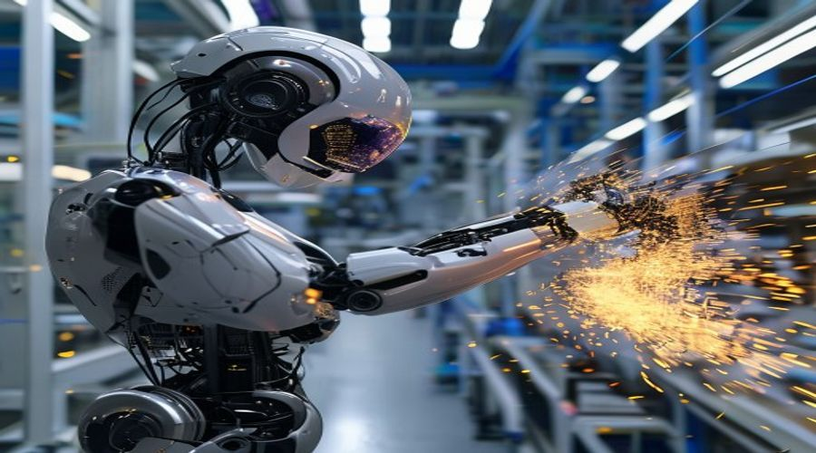

Huawei Ascend Chips: Powering China's AI Sovereignty Push

In an era defined by technological competition and geopolitical tension, the race for artificial intelligence (AI) dominance is heating up. At the heart of China's ambitious drive for technological independence lies Huawei's Ascend chips, a critical component in its quest for AI sovereignty. These powerful processors are not just hardware; they represent China's strategic pivot towards self-reliance in a domain crucial for future economic and military leadership, directly challenging established global tech supply chains.
The Geopolitical Imperative: Why AI Sovereignty Matters
The global semiconductor industry has long been dominated by a handful of players, primarily from the United States, Taiwan, and South Korea. This concentration, particularly in advanced AI chip design and manufacturing, poses a significant strategic vulnerability for nations without indigenous capabilities. For China, the increasing imposition of export controls and sanctions by the U.S. government on advanced semiconductor technology has underscored the urgent need for AI sovereignty. This isn't merely about economic competition; it's a national security imperative, ensuring that critical infrastructure, defense systems, and future innovation are not held hostage by external geopolitical pressures. Huawei, having faced some of the most stringent restrictions, has become a reluctant but determined vanguard in this struggle, channeling massive investments into research and development to create domestic alternatives. The goal is to build a robust, self-sufficient AI ecosystem from the ground up, minimizing reliance on foreign intellectual property and manufacturing processes. This drive for semiconductor independence is transforming China's industrial policy, fostering a culture of innovation and resilience in the face of unprecedented challenges.
Ascend's Technical Prowess: From Cloud to Edge
Huawei's Ascend series of AI processors stands as a testament to its engineering capabilities, designed to cover a broad spectrum of AI applications from data centers to edge devices. The flagship Ascend 910, unveiled in 2019, boasts an impressive 256 teraFLOPS (TFLOPS) at FP16 and 512 TFLOPS at INT8, making it one of the most powerful AI training chips globally, even surpassing some contemporaries from NVIDIA in certain benchmarks. This raw processing power is critical for training large-scale AI models, which are the backbone of advanced AI applications like natural language processing and computer vision. Complementing the 910 is the Ascend 310, an efficient inference chip designed for edge computing and lower-power applications, capable of 16 TFLOPS at INT8. These chips are not just about raw power; they are built on Huawei's Da Vinci architecture, which prioritizes energy efficiency and flexibility, allowing developers to optimize AI workloads more effectively. The Ascend series is increasingly deployed across various sectors in China, from smart cities and autonomous vehicles to scientific research and telecommunications, demonstrating its versatility and growing market penetration within the domestic ecosystem. Huawei's strategic focus is to integrate these chips seamlessly into its cloud services, enterprise solutions, and a growing network of partners, creating a formidable alternative to foreign hardware.
Building an Indigenous AI Ecosystem: CANN and Beyond
Beyond the hardware, Huawei is meticulously cultivating a comprehensive indigenous AI ecosystem around its Ascend chips. A crucial element of this strategy is CANN (Compute Architecture for Neural Networks), a unified software stack designed to facilitate the development and deployment of AI applications across the entire Ascend hardware portfolio. CANN provides a full-stack solution, including a neural network operator library, a development toolkit, and a runtime environment, aiming to simplify AI development and maximize hardware utilization. This robust software layer is vital for attracting and retaining developers, as even the most powerful hardware is ineffective without accessible and efficient programming tools. Huawei has invested heavily in community building, offering training programs, developer kits, and extensive documentation to foster a vibrant ecosystem of AI talent in China. Furthermore, the Chinese government plays a significant role, providing subsidies, preferential policies, and strategic guidance to accelerate the adoption of domestic AI hardware and software solutions. This concerted effort involves collaborations with universities, research institutions, and various industries, ensuring that Ascend chips are integrated into key national projects and commercial applications. While challenges remain, particularly in competing with the mature ecosystems of foreign rivals, the rapid growth of the Ascend community indicates a strong push towards self-sufficiency and innovation in AI.
Global Impact: What This Means For You
The rise of Huawei Ascend chips and China's push for AI sovereignty carries profound implications for the global technology landscape and beyond. For international businesses, it means navigating an increasingly bifurcated tech world, where adherence to different standards and supply chains might become necessary. Companies operating in or with China may need to consider adopting domestic AI hardware and software solutions to remain competitive and compliant within the Chinese market. For investors, this shift presents both risks and opportunities; while traditional chip giants may face increased competition, there's potential for growth in Chinese domestic tech firms and related industries. Furthermore, the drive for AI sovereignty could accelerate innovation globally, as competition spurs advancements from all players. It might also lead to a more diverse range of AI solutions and architectures, breaking the dominance of a few established technologies. Ultimately, this strategic pivot by China, driven by Huawei's Ascend chips, signifies a reshaping of global tech power dynamics, influencing everything from supply chain resilience to the future direction of AI research and development for decades to come.
Conclusion
Huawei's Ascend chips are more than just advanced semiconductors; they are a symbol of China's unwavering commitment to achieving AI sovereignty and technological independence. Through cutting-edge hardware like the Ascend 910 and a robust software ecosystem supported by CANN, Huawei is laying the groundwork for a self-sufficient AI future. This ambitious endeavor is not without its hurdles, particularly in overcoming the long-standing dominance of global tech giants and the complexities of advanced manufacturing. However, the progress made so far demonstrates China's formidable resolve and capacity for innovation. As geopolitical currents continue to shape the tech world, the trajectory of Huawei's Ascend chips will be a critical indicator of China's ability to forge its own path in the AI revolution. Stay informed on these critical developments, as they will undoubtedly influence global technology, investment, and innovation strategies for years to come.